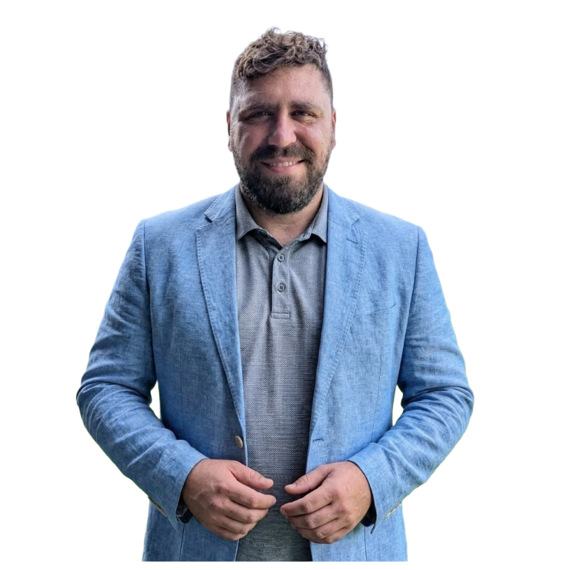

Sebastián Altamirano
Estrategia política y comunicación
Especialista en Comunicación Política (UNR). Consultor, docente universitario de posgrado y director de campañas electorales en la provincia. Años coordinando estrategias de comunicación gubernamental y análisis de opinión pública: traduce datos en decisiones.
Comunicación política
Campañas electorales
Opinión pública
Estrategia